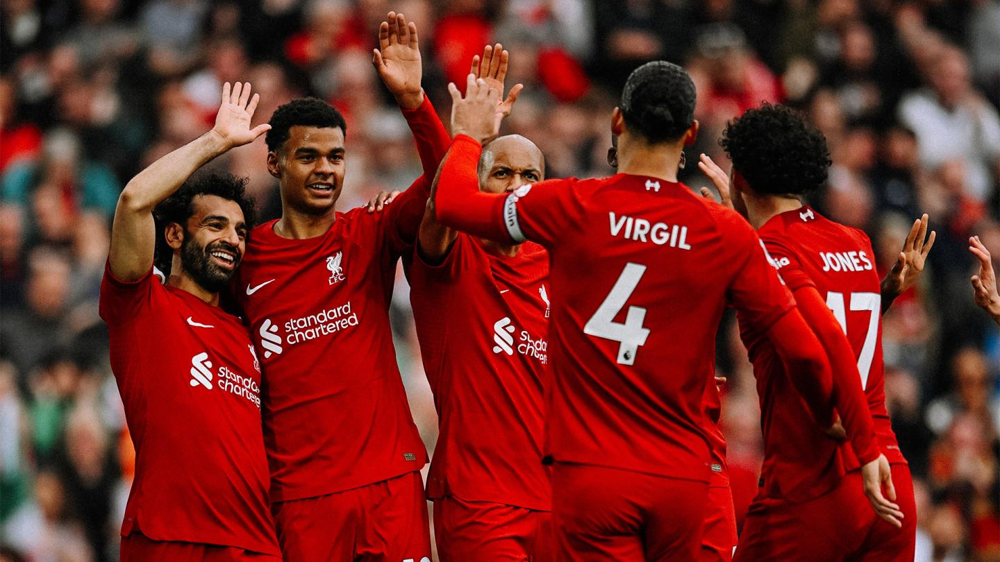
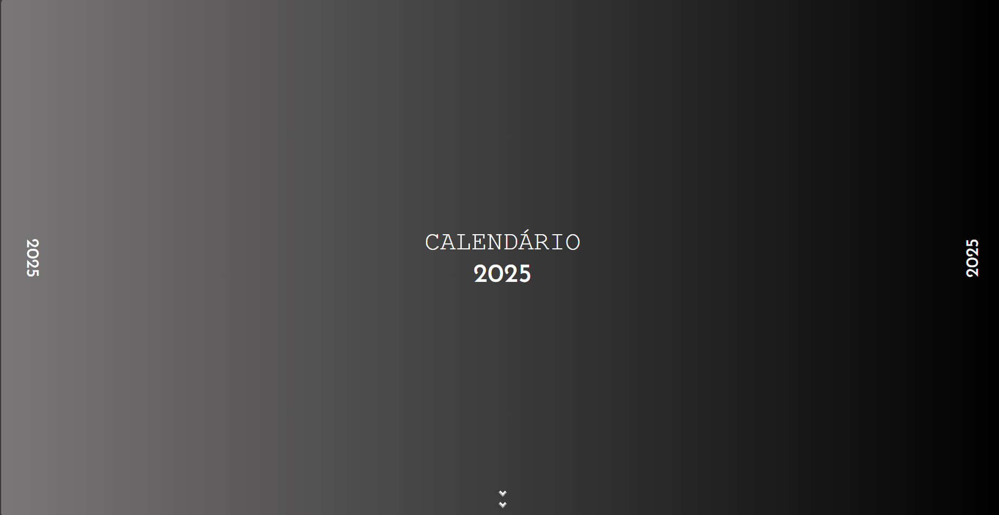
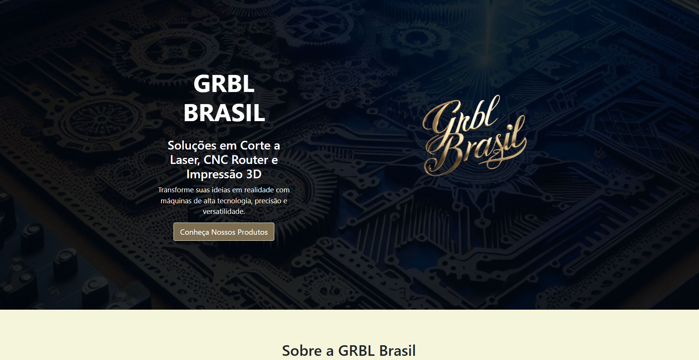
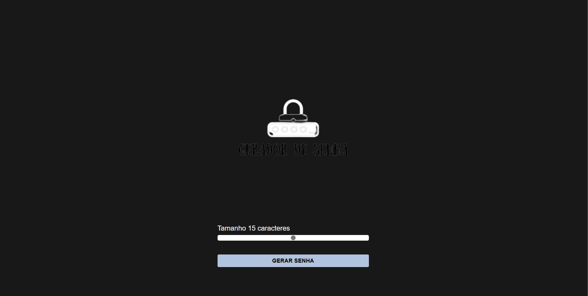

Bem vindo ao meu site!
Meu nome é Luis Felipe. Sou estudante de Análise e Desenvolvimento de Sistemas na Fatec Campinas, com 2 anos de experiência em ambiente corporativo, onde desenvolvi habilidades em suporte administrativo e fundamentos de programação. Possuo paixão por tecnologia e busco oportunidades de estágio para aplicar meus conhecimentos em HTML, CSS, JavaScript, Python e outras tecnologias. Sou proativo, dedicado e estou ansioso para contribuir com projetos desafiadores e continuar meu aprendizado na área de desenvolvimento.
Serviços
Desenvolvimento WEB
Auxiliando em projetos front e back-end.

Automação
Criação de rotinas para automatizar tarefas repetitivas, otimizando o tempo e a eficiência do trabalho; Criação de scripts e automação de tarefas utilizando Python; Testes e depuração de código para garantir a qualidade do software.
Serviços adicionais
Portfólio
Landing Page
Uma landing page feita para a empresa fictícia GRBL Brasil: Desafios e Soluções em CNC.

Gerador de senhas
Um site que gera senhas que podem ser usadas da maneira que preferir
